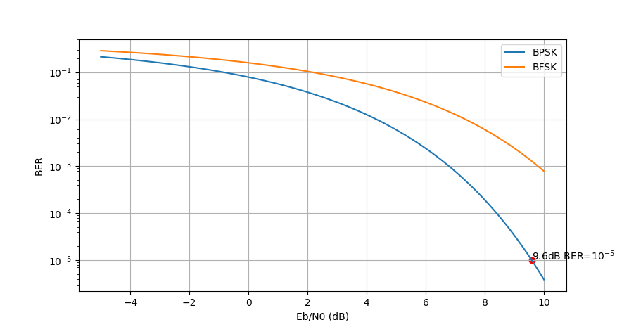

# 二进制双极性信号的理想判决
我们考虑最简单的一类调制信号，二进制双极性信号 (binary antipodal signal)：
s1(t)=s(t),s2(t)=−s(t)
发送这两种信号的概率分别是
Pr{s1(t)}=p,Pr{s2(t)}=1−p
不难注意到我们可以使用基底
ϕ1(t)=∣∣s1(t)∣∣s1(t)
表示该信号。假设信号的能量为Eb，不失一般性地，我们将符号s1(t) 判决域表示为D1，回忆上一节的 MAP 判决准则
m^=1≤m≤Nargmax[2N0logPm+rTsm−21Em]=1≤m≤Nargmax[ηm+rTsm]
我们能够得到判决域的表示
D1==={r∈R:η1+rs1>η2+rs2}{r∈R:2N0logp−2Eb+rEb>2N0log(1−p)−2Eb−rEb}threshold decision{r∈R:r>4EbN0logp1−p}
鉴于二进制双极性信号的性质，这里的r,s1,s2 均采用标量表示以减少麻烦。根据判决域的表达形式，我们发现实际上对于二进制双极性信号，理想判决就是判断接收值是否超过了某一个阈值rthres。
观察理想判决函数，如果我们需要实现错误率最低的接收，我们需要精确的计算概率p 和信号的强度Eb，估计信道噪声的N0。这些条件还是比较麻烦的。
我们记阈值rthres=4EbN0logp1−p，可以得到理想判决函数：
gopt(r)=⎩⎨⎧1,tie,2,if r>rthresif r=rthresif r<rthres
其中r=rthres 时是无法判断的，但是在实际情况下基本可以不用考虑。
接下来，我们来分析其错误率，由于是二进制信号，信号的 SER 就等于 BER：
Pe===m=1∑2Pmm′=m∑∫Dm′f(r∣sm)drmistake s1 for s2p∫D2f(r∣s=Eb)dr+mistake s2 for s1(1−p)∫D1f(r∣s=−Eb)drp∫−∞rthresf(r∣s=Eb)dr+(1−p)∫rthres∞f(r∣s=−Eb)dr
观察上式中的积分部分，不失一般性地，我们以左边为例，发送的符号s=Eb 在经过了 AWGN 信道之后，接收的符号满足 Gaussian 分布
N(Eb,2N0)
错误率的表达式因此可以写成
Pe===pPr{N(Eb,2N0)<rthres}+(1−p)Pr{N(−Eb,2N0)>rthres}pPr{N(Eb,2N0)<rthres}+(1−p)Pr{N(Eb,2N0)<−rthres}pQ(N0/2Eb−rthres)+(1−p)Q(N0/2Eb+rthres)
这个形式还是可以进行数值计算的。
不过，让我们考虑一个更好的情况，在发送的s1 和s2 等概的条件下，我们可以采用 ML 接收机实现。此时，我们发现rthres=0，此时实现理想接收也不需要估计信号能量和噪声电平。在这种情况下，接收端的错误率可以化简为
Pe=Q(N02Eb)
# 二进制等概率正交信号的理想判决
下面我们考虑二进制等概率正交信号 (binary equal-probable orthogonal signal) 的情况。考虑发送端两种调制符号s1(t) 和s2(t)，分别对应一对正交的基底
s1(t)=ϕ1(t),s2(t)=ϕ2(t)
根据上一节叙述的 ML 判决准则，对于符号s1，接收机的理想判决域
D1={r∈R2:∣∣r−s1∣∣<∣∣r−s2∣∣}
不难注意到，符号错误的情况为∫D1f(r∣s2) 和∫D2f(r∣s1)。对于判决域D1，我们考虑接收矢量r=s2+n，有
⟺⟺⟺⟺∣∣r−s1∣∣<∣∣r−s2∣∣∣∣s2+n−s1∣∣<∣∣n∣∣∣∣(s2−s1)+n∣∣2<∣∣n∣∣2∣∣s2−s1∣∣2+∣∣n∣∣2+2(s2−s1)Tn<∣∣n∣∣2(s2−s1)Tn<−21∣∣s2−s1∣∣2
注意不等式的左边，n 是一个二维 Gaussian 随机变量，(s2−s1)Tn 也满足 Gaussian 变量，其均值为 0，而方差为
E[(s2−s1)TnnT(s2−s1)]=2N0∣∣s2−s1∣∣2
协方差
假设一个随机变量X=[X1,X2,...,Xn]T，均值μi=E(Xi)，协方差矩阵为第(i,j) 项为
Σij=cov(Xi,Xj)=E[(Xi−μi)(Xj−μj)]
的矩阵。
随机变量的方差可以写作协方差的形式：
var(X)=cov(X,X)
我们令
d122=∣∣s2−s1∣∣2
那么(s2−s1)Tn∼N(0,2N0d122)，则
===∫D1f(r∣s2)Pr{N(0,2N0d122)<−21d122}Q(d12N0/2d122/2)Q(2N0d122)
根据对称性，∫D2f(r∣s1)=Q(d122/(2N0))。
有趣的是，我们在推导过程中并没有利用到s1 和s2 正交的性质 —— 这样看来，上面的错误率推导对单纯的二进制双极性信号也是适用的。
# 一般的二进制等能量、等概率信号
我们把上面的讨论推广到更加一般的情况。考虑两个发送符号
∣∣s1∣∣=∣∣s2∣∣=Eb
两个符号之间的距离的平方d122=∣∣s2−s1∣∣2=∣∣s2∣∣2+∣∣s1∣∣2−2<s2,s1>=2Eb(1−ρ)，其中
ρ=∣∣s2∣∣⋅∣∣s1∣∣<s2,s1>, we call ρ correlation coefficient
这样，接收机的错误率为
Pe=Q(2N0d122)=Q((1−ρ)N0Eb)
这是一般情况下二进制等概率等能量信号接收机的错误概率，我们能够绘制两种常见的调制方式的比特错误率 - 信噪比曲线。

可见 BPSK 和 BFSK 相比，抗噪声性能存在明显优势。此外，对于 BER=10−5 的情况，BPSK 需要 9.6dB 的信噪比，这是在工程中常用的重要数据。